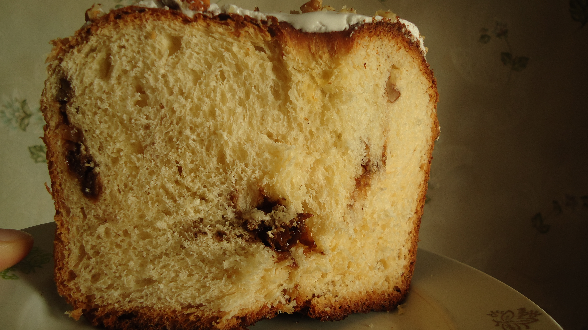

«Живи так, как будто ты умрёшь завтра. Учись так, как будто ты будешь жить вечно»
Махатма Ганди
Дорогие друзья, эта книга посвящена тому, что я делаю всю свою жизнь, и, убеждена, делаете Вы некоторую часть своей жизни. Почти всё, что мы умеем в своей жизни и любим, мы когда-то увидели, узнали, изучили, развили в себе. И Вы читаете эти строки потому, что заинтересованы инвестировать Ваше время максимально эффективно.
Для кого эта книга? Для тех людей, которые хотят:
- сделать привычным положительный результат от своих усилий;
- повысить продуктивность и качество своей жизни, получать желаемые результаты легче и увереннее;
- определить приоритеты в отношениях с детьми и радоваться их успехам без стресса, без выматывающего контроля и давления с вашей стороны;
- навести порядок в хаосе информации по теме просто и быстро;
- получать удовольствие от процесса развития и учёбы.
Здесь я поделюсь с Вами секретами, которыми я сама пользуюсь много лет и получаю желаемые результаты и не только в своей жизни, но и в своей работе преподавателя вижу у своих учеников, которые следуют этим принципам. Проявив немного наблюдательности или просто обратившись к своему жизненному опыту, Вы сможете увидеть как всё это работает в Вашей жизни и в жизни окружающих Вас людей, но главное, научитесь этим пользоваться целенаправленно, в любое время, когда пожелаете.
МНЕ ВСЕГДА НРАВИЛОСЬ УЗНАВАТЬ НОВОЕ, НО Я ХОТЕЛА РЕЗУЛЬТАТ ЛЕГКО И БЫСТРО.
Позволю себе несколько слов о некоторых своих собственных результатах.
Так сложилось, что с раннего детства у меня слабое зрение. Всё, что было легко и доступно другим для меня таковым не было. Но я никогда не отказывалась от своих желаний и целей. Моя дорогая бабушка очень любила меня и посвящала мне много времени пока родители были на работе. У неё я научилась готовить и, благодаря этому, совершила некоторые свои победы. Например, в 10 лет я без какого-либо участия или контроля со стороны приготовила совершенно потрясающий кулич, какой не у всякой взрослой и опытной хозяйки может получиться. Это не было целью, но это было победой и желанием порадовать близких (мама не умела обращаться с таким тестом и никогда в жизни его не делала).

Другой
моей целью было не получать отрицательных
оценок; не с первого дня, но к 5-6 классу,
хотя почти весь первый класс я вообще
не хотела ходить в школу. И я научилась
так учиться. Школу, университет и мастерат
я окончила с очень хорошими отметками.
Причём, никто никогда не заставлял, не
требовал и не контролировал меня в этом
вопросе, кроме меня самой. Когда я
просила, мне помогали.
Позже были многие другие желания, которые я осуществила. Узнавать новое и при этом получать удовольствие от самого процесса учёбы, для меня — это ещё и возможность получить результат легко.
Можете ли Вы превратить освоение чего-то нового в отдых и при этом получить желаемое? Знаете ли как это сделать? Я желаю Вам именно такой эффективности в обучении.
Мне всегда было интересно, почему люди поступают так или иначе, что заставляет их действовать, что вдохновляет и помогает. Поэтому я выбрала профессию, которая позволяла максимально глубоко и полно изучать такие вопросы — психологию. Но ни одна информация не становится нашим знанием, пока мы не применим её на практике.
Мне довелось работать и практическим психологом в школе, помогая детям адаптироваться и преодолеть трудности в учёбе и развитии, а родителям правильно понимать, что происходит с их ребёнком и как можно ему помочь. Несколько лет спустя я начала преподавать. Это позволило мне ещё и продолжить развиваться как профессионалу в сфере обучения, разработать и реализовать множество учебных программ и программ развития.
Далее речь будет идти о квинтэссенции, извлечённой мной, которую можно применить в любом возрасте.
В этой книге я поделюсь с Вами наиболее эффективными стратегиями и тактиками в обучении, которые Вы сможете применить и в своей жизни, и в отношениях с Вашими детьми. Ведь каждый раз, когда мы хотим что-либо изменить к лучшему, нам нужно увидеть, понять, узнать, а значит научиться чему-то новому. Речь пойдёт и о физическом, и об интеллектуальном и о личностном развитии.
Ваши усилия должны быть направленны на сбалансированное развитие. У всех нас есть и тело, и внутренний мир, и мы живём среди людей. Поэтому развиваться необходимо в каждом из направлений. Будет ошибкой уделять внимание только одной из сторон нашей жизни.
Результаты более чем 15 лет практической работы с детьми и взрослыми, а также мои собственные достижения позволили мне все инструменты эффективного развития и обучения применить на практике. А теперь я готова этими ценностями поделиться и с Вами, мой дорогой читатель, поскольку свою миссию я вижу, в том числе, в том, чтобы помогать людям развиваться и быть счастливыми. И когда Вы на практике примените все те стратегии и тактики, которые очень понятно и просто описаны в этой книге, Вы сможете испытать подлинное удовольствие от учёбы и естественным образом достигнете желаемых результатов быстро и легко.
Желаю Успехов и попутного ветра, дорогие друзья, в Вашем путешествии по страницам этой книги.